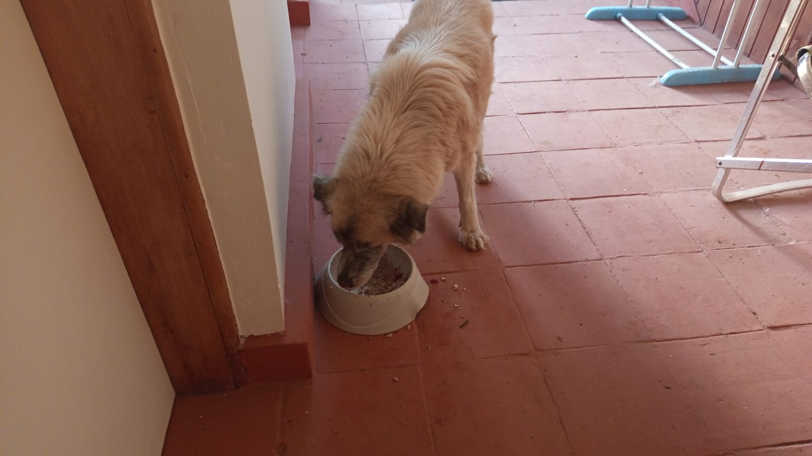

Mucheru World of Golf
Extensive civil earthworks, subgrade grading, and moisture protection barriers progressed across Mucheru World of Golf under the field supervision of Mr. Gichuhi. Operations prioritized establishing clear playing corridors across fairways 1 and 2, deploying heavy earthmoving equipment to distribute red topsoil across six key green collars, and securing structural polythene membranes across four green foundations.
- Fairway Clearing & Subgrade Grading (Fairways No. 1 & No. 2): Heavy mechanical clearing and grubbing progressed across Fairway No. 1 and Fairway No. 2. The Front Loader scraped uncompacted earth, removed dense scrub and surface undulations, and leveled broad fairway corridors connecting tee complexes with target green complexes.
- Red Soil Distribution Around Greens (Greens No. 10, 11, 12, 14, 15 & 16): Deployed the Backhoe Loader (Front Loader) for 9 continuous operational hours to haul and distribute rich red topsoil around the perimeter collars of six distinct greens (Greens No. 10, No. 11, No. 12, No. 14, No. 15, and No. 16). The red topsoil forms a protective ring and containment berm around the hardcore foundation beds, shielding gravel drainage matrices and defining green contours.
- Polythene Moisture Membrane Placement (Greens No. 14, 15, 16 & 17): Heavy-gauge impermeable black polythene membrane sheets were systematically measured, unrolled, and anchored in place across Greens No. 14, No. 15, No. 16, and No. 17. This critical barrier isolates the subterranean hardcore and ballast stone drainage layers from surrounding subsoils, preventing root intrusion and preserving the structural stability of the golf greens.
Milestone Accomplishment — Green Perimeter Containment & Fairway Corridor Clearing
Successful placement of moisture-barrier polythene membranes across Greens 14, 15, 16, and 17, coupled with extensive red topsoil distribution across Greens 10, 11, 12, 14, 15, and 16, successfully locks in foundation profiles across the central course sector while establishing leveled fairway corridors along Fairways 1 and 2.
Daily equipment deployment log detailing operational machinery on site, specific task allocation, verified meter hours, agreed billing rates, and consolidated expenditure.
| Machine Description | Primary Task & Operating Zone | Hours Logged | Hourly Rate (KES) | Total Amount (KES) | Site Verification |
|---|---|---|---|---|---|
| Backhoe Loader (Front Loader) | Fairway 1 & 2 Clearing + Red Soil Distribution (Greens 10, 11, 12, 14, 15, 16) | 9.00 hrs | 6,500.00 | 58,500.00 | Verified (Mr. Gichuhi) |
| Consolidated Machinery Expenditure | 9.00 hrs | — | KES 58,500.00 | Approved | |
Heavy Equipment Operational Note
In accordance with project reporting standards, the Backhoe Loader and Front Loader operate as a single consolidated heavy unit on site. Operational hours for earthmoving, fairway grubbing, and red soil distribution are accurately consolidated under the single Backhoe Loader entry at the verified rate of KES 6,500/hr.
🎥 Mucheru World of Golf — Progress Video
Comprehensive field video footage capturing September 3 progress at Mucheru World of Golf, including fairway clearing and grading, stone hardcore green foundation placement, and Front Loader red soil distribution.
🎥 Front Loader Red Soil Distribution
Field video recording capturing the Backhoe Loader actively dumping, spreading, and shaping mounds of rich red topsoil around the perimeter stone hardcore bedding of the golf greens.

Fairway 1 & 2 Aerial Subgrade Overview
High-angle aerial capture displaying the extensive grading and clearing across fairways 1 and 2, revealing smooth subgrade alignment and heavy machinery tread marks.

Cleared Fairway Corridor Between Greens
Drone overview showcasing the cleared playing fairway corridor situated between two newly bunded golf green complexes with red soil containment perimeters.

Backhoe Loader Clearing Fairway Ground
Front Loader actively clearing and grading fairway subgrade, kicking up dust plumes in the background while the stone hardcore foundation of a green stands ready in the foreground.

Heavy Blade Earth Clearing in Action
Close operational profile of the Front Loader pushing earth, clearing brush, and leveling rough fairway terrain to establish an even fairway base.

Completed Fairway Corridor Alignment
Ground-level perspective of the cleared and leveled fairway corridor leading directly toward the tree-lined boundary and distant green foundation.

Polythene Moisture Membrane Installation
Ground crew unrolling and positioning a continuous long strip of heavy-duty black polythene membrane to protect subterranean drainage across greens 14 to 17.

Front Loader Ringing Green Foundation with Red Soil
Landscape view showing the Backhoe Loader systematically placing and grading mounds of rich red topsoil around the perimeter of the hardcore stone green bed.

Bucket Placement of Red Topsoil Along Hardcore Bedding
Detailed view of the Front Loader bucket depositing red soil berms directly adjacent to the hand-pitched hardcore rock foundation of the green.

Green Foundation with Membrane & Red Soil Ring
Completed circular green foundation showing hand-laid stone hardcore, black polythene membrane edging, and a uniform ring of distributed red topsoil.

Red Soil Embankment Around Hardcore Trench Bed
Elevated perspective showing the structured stone hardcore bedding divided by drainage channels and fully enveloped by freshly compacted red soil berms.

Central Drainage Trench & Hardcore Sub-Base
Precision view of a green subgrade displaying the bisecting drainage trench cut through the stone hardcore layer, lined with perimeter polythene and red topsoil.

Panoramic View of Finished Red Soil Collar
Panoramic angle showing the wide, smooth red soil collar distributed around the circular stone green foundation ready for final shaping and rootzone layering.
Chaka Farms
A comprehensive logistical consignment of estate equipment, cooling and ventilation appliances, cooking equipment, patio heating infrastructure, and maintenance materials was safely transported from Lower Kabete and delivered to Chaka Farms. On-site receiving, offloading, physical inspection, and cataloging were jointly overseen by Mr. Gichuhi and Dennis. All delivered line items were staged under the secure carport canopy pending allocation.
| Tag # | Item Description | Specifications / Model | Qty | Visual Identification & Staged Condition |
|---|---|---|---|---|
| INV-001 | Centrifugal Water Pump | Model: CPm 158 (0.75 kW / 1.0 HP), Stainless steel impeller, Made in Italy | 1 | Factory boxed unit; original cardboard packaging intact. |
| INV-002 | Gas Cooktop / Hob | Ariston 4-Burner Built-in/Countertop Hob, Rotary dial ignition controls | 1 | Black enamel body; clean used condition, ready for mount. |
| INV-003 | Cooker Frame Base | Custom rectangular metal/wood framework base | 1 | Structural base fitted directly beneath the cooktop hob. |
| INV-004 | Outdoor Gas Patio Heaters | Mushroom / Umbrella radiant patio heaters, Cylindrical glass flame guard + deflector hood | 2 | Tall floor-standing units; commercial bronze/stainless finish. |
| INV-005 | LPG Gas Cylinders | 13 kg domestic refilled cylinders (1x TotalEnergies Orange, 1x K-Gas Green) | 2 | Standard domestic valve fittings; safely staged near heaters. |
| INV-006 | AC / Equipment Metal Stands | Heavy-duty fabricated black square hollow steel: 1x Wide multi-tier rack, 1x Tall condenser cage | 2 | Welded metal frames; structurally sound condition. |
| INV-007 | Air Conditioning Units | Mixed cooling set: 1x Von Hotpoint Portable AC, 1x Outdoor Condenser with indoor console | 2 | 1 white portable roller unit, 1 split outdoor condenser unit. |
| INV-008 | Industrial Pedestal Fans | Heavy-duty oscillating cooling fans: 1x High-velocity commercial stand fan, 1x Medium fan (orange blades) | 2 | Complete with round weighted bases and motor heads. |
| INV-009 | Square Panel Exhaust Fans | Dual industrial square plate metal exhaust blowers with 4-blade metal impellers | 2 | Industrial grey steel mounting plates with direct-drive motors. |
| INV-010 | Temporary Power Board | Wood batten distribution manifold with 6–8x 13A UK 3-pin switched socket outlets | 1 | Timber board fitted with surface-mounted socket gangs. |
| INV-011 | Industrial Power Supply / Unit | Perforated metal casing switching PSU / control box (Labeled CPU / AUD3) | 1 | Silver/grey perforated metal enclosure with terminal wiring. |
| INV-012 | Utility Crate & Cabling | Blue heavy-duty vented plastic storage crate with coiled industrial power/data harness cables | 1 | High-capacity plastic crate filled with power cables. |
| INV-013 | Used Vehicle Tires | Scrap / spare radial car tires (tubeless), stacked in 2 columns (4 and 6) | 10 | Used automotive rubber tires in stacked formation. |
| Total Delivered Consignment Line Items | 28 | 13 Distinct Asset Categories Verified Complete | ||
Consignment Receiving & Verification Status
All 28 units across 13 inventory tags were offloaded without transit damage, cross-checked against manifest documentation, and safely positioned under the carport canopy.
Daily dairy operations log for Thursday, September 3, 2026. In strict compliance with estate reporting standards, milk yield is recorded strictly in Litres (L). Dairy cow yield represents the gross production from which employee allowances, welfare rations, and kid nutrition disbursements are deducted to establish the net farm balance.
| Production / Allocation Stream | Morning Session (L) | Evening Session (L) | Daily Total (L) | Accounting Category & Notes |
|---|---|---|---|---|
| Dairy Cow Milk Yield (Gross Production) | 4.0 L | 3.0 L | 7.0 L | Gross Farm Milk Production (Recorded in Litres) |
| Gladys Allocation | 0.5 L | — | -0.5 L | Deduction drawn out of total milk yield |
| Maasai Allocation | 0.5 L | — | -0.5 L | Deduction drawn out of total milk yield |
| Goat Kids Nutrition Ration | 0.5 L | 0.5 L | -1.0 L | Nutrition ration (0.5L morning + 0.5L evening) |
| Total Allocations / Deductions Drawn | 1.5 L | 0.5 L | -2.0 L | Total disbursed from daily production |
| Net Remaining Farm Balance | 2.5 L | 2.5 L | 5.0 L | Retained Farm Inventory Balance |
Milk Production Accounting Clarification
Total gross milk production from dairy cows reached 7.0 Litres (4.0L morning + 3.0L evening). Deductions drawn out of this total include staff welfare allocations for Gladys (0.5L) and Maasai (0.5L), alongside nutrition rations for goat kids (1.0L total across morning and evening sessions). Net retained farm inventory stands at exactly 5.0 Litres.
Comprehensive operational routine covering canine physical exercise, livestock socialization, health inspection and wound care, motorized grounds maintenance, and general estate cleanliness.
- Morning Pack Exercise & Goat Socialization (Mali, Zara & Logan): Willy conducted an extensive morning walking, physical conditioning, and socialization session with Mali, Zara, and Logan. Controlled exposure to the farm goat herd was successfully executed to build desensitization, curb predatory drive, and enforce pack obedience in an active farm environment.
- Canine Health Inspection & First Aid (Coby): During daily health checks, Coby was observed to have sustained a localized superficial skin wound. Willy thoroughly disinfected and cleaned the wound site, applied prescribed veterinary antiseptic medicine, and isolated the area to promote clean healing.
- Afternoon Off-Leash Conditioning (Bella & Coby): In the afternoon, Bella and Coby were taken on an extended off-leash exercise run across the open farm fields and perimeter grounds, supporting cardiovascular fitness and free roaming exploration.
- Guest House Lawn Mowing & Landscape Edging: Willy deployed the motorized brush cutter around the guest house perimeter, trimming overgrown grass, manicuring turf borders along decorative flowering hedges, and cleaning lawn verges.
- General Compound Sweeping & Cleanliness: Margaret and Monica performed compound maintenance across the main farm compound, raking dried leaves, clearing refuse, and maintaining immaculate cleanliness around the homestead and utility corridors.
🎥 Morning Pack Walking & Socialization (Session 1)
Field video recording capturing the morning pack exercise, physical conditioning, and goat socialization routine conducted with Mali, Zara, and Logan.
🎥 Extended Farm Walk & Conditioning (Session 2)
Extended footage displaying off-leash farm exercise, canine agility, and pack coordination along farm tracks under Willy's guidance.

Consignment Delivery Transit on Pickup Bed
White transport pickup truck loaded with the complete asset consignment secured with heavy-duty yellow ratchet tie-downs, overseen on arrival by Mr. Gichuhi.

Delivered Consignment Staged Under Covered Carport
Assorted inventory staged under the carport canopy including patio heaters, fans, gas cooktop hob on crate, stacked tires, LPG cylinders, and welded metal stands.

Coby's Skin Wound Clinical Inspection & Treatment
Macro close-up documenting Coby's localized skin lesion after thorough antiseptic cleaning, disinfection, and topical medication application by Willy.

Motorized Brush Cutter on Manicured Lawn
Brush cutter stationed on the expansive guest house front lawn amidst grass cutting and precision border trimming operations.

Completed Guest House Lawn Trimming
Immaculately trimmed green turf extending toward decorative yellow hedges and mature trees surrounding the guest house perimeter.
Kabete Residence
Daily residential operations, structural joinery, demolition works, and mechanical infrastructure maintenance progressed across Kabete Residence. Operations were actively overseen and field updates shared by Njoki. Significant project milestones were achieved today, notably the full completion of the security dog kennel at the main gate, completion of shelf edge lipping in the cold room, and demolition of timber walling in the facility's second toilet compartment.
- Dog Kennel at Main Gate [COMPLETED]: Successfully completed the dedicated dog kennel enclosure positioned at the main entrance gate. Works finalized today included laying durable floor tiling, applying clean red protective wall paint, and securing heavy-gauge welded wire mesh fencing and gate latches.
- Outdoor Sunken Fireplace Demolition & Excavation [ONGOING]: Heavy manual excavation and subgrade clearance continued at the outdoor fireplace feature. The site team excavated deep into the red clay bank adjacent to the stone retaining wall, removing rock boulders, tree roots, and soil overburden to prepare the sub-base for structural masonry seating.
- Cold Room Shelving Edge Lipping [COMPLETED]: Finish joinery work on the storage shelving units inside the cold room was officially finalized. The joiner precisely cut, fitted, and secured smooth edge lipping profiles across all wall-mounted shelving tiers, sealing exposed board edges and reinforcing edge impact resistance.
- Second Toilet TNG Demolition [COMPLETED]: Demolition and removal of aged tongue-and-groove (TNG) timber paneling lining the walls and ceiling of the second toilet compartment in the cold room structure was fully completed. Salvaged timber planks were sorted and stacked, clearing the space for upgraded wall finishing.
- River Pump Waterline Union Joint Installation: Plumbing maintenance was executed along the estate river water supply line. Technicians fitted and securely tightened a heavy-duty green PPR union connector, brass check valve assembly, and suction strainer mesh using pipe wrenches to ensure leak-proof high-pressure water delivery from the river pump.
- Resident Pets Welfare & Feeding: Domestic pet care routines were conducted for the estate's resident animals—including Ajabu the Golden Retriever on the shaded veranda, and the three resident cats (Reo, Mocha & Aiko) who enjoyed their feeding regimen indoors.
Key Accomplishments Completed — Main Gate Kennel & Cold Room Finishing
Full completion of the main gate dog kennel stall with finished tiling and security mesh, combined with 100% completion of cold room shelving edge lipping and TNG timber demolition in the second toilet compartment, marks substantial progress in estate infrastructure modernization.

Dog Kennel at Main Gate [COMPLETED]
Fully finished main entrance dog kennel featuring durable square floor tiles, red-painted protective side walls, and secure welded wire mesh gate enclosure.

Cold Room Shelving Edge Lipping [COMPLETED]
Craftsman in boiler suit completing the precision installation and adhesive bonding of finish edge lipping along wall-mounted storage shelves in the cold room.

Shelving Edge Lipping Installation in Progress
In-progress view of shelf edge profiling, tool staging, and lipping trimming inside the compact cold room utility storage space.

Second Toilet TNG Panel Demolition [COMPLETED]
Site worker gathering and clearing stripped tongue-and-groove timber paneling boards following complete wall and ceiling clearance inside the second toilet compartment.

Installing Union Joint at River Waterline
Plumber using heavy pipe wrenches to tighten a durable green PPR union connector fitted with brass valve and intake strainer along the river water pump line.

Outdoor Fireplace Subgrade Clearance
Laborers digging and grading the sunken base within the outdoor fireplace excavation zone, leveling rocky soil foundations beneath the upper terrace.

Fireplace Terrace Bank Excavation
Worker atop the stone wall bank shoveling loose red clay and gravel overburden down into the fireplace excavation pit during clearance operations.

Dual Shoveling & Slope Grading
Two site workers in safety gear cutting back the red soil vertical face and removing embedded rock strata to expand the sunken fireplace amphitheater.

Sunken Fireplace Excavation Pit
Wide high-angle perspective showcasing the extensive excavation depth, terraced stone retaining wall, and graded earthen foundation for the upcoming fireplace.

Ajabu the Golden Retriever Feeding on Shaded Veranda
Kabete resident pet Ajabu enjoying his fresh morning meal in a clean feeding bowl along the sheltered exterior tiled veranda corridor.

Resident Cats Reo, Mocha & Aiko Feeding Indoors
The three resident cats of Kabete Residence—Reo, Mocha, and Aiko—calmly dining side by side from individual stainless steel food dishes.
Amani Cottage
Comprehensive property maintenance, landscaping enhancements, and interior housekeeping routines were carried out at Amani Cottage under the supervision of Edwin (Grounds & Lawn) and the Domestic Housekeeper (Interior Housekeeping). Operations combined outdoor horticultural care and soil conditioning with thorough interior deep cleaning and textile laundering.
- Targeted Compost Manure Application: Edwin conducted a detailed inspection of the front and side lawns. Identifying localized zones where grass coverage was thinning or underperforming, he prepared and transported wheelbarrows of rich organic compost manure, carefully spreading and top-dressing the stressed patches to restore soil organic content and stimulate healthy root growth.
- Bamboo Tree Planting & Boundary Screening: A mature, healthy bamboo tree specimen was planted in a designated garden boundary area. The planting hole was excavated, enriched with nutrient-rich organic soil amendments, backfilled, and tamped down to establish natural green screening.
- Sprinkler & Hose Irrigation & Grounds Sweeping: Comprehensive hose and sprinkler irrigation was conducted across all lawn areas and ornamental shrubbery beds to hydrate the rootzone. All paved access pathways, garden stone trails, and outdoor living areas were thoroughly swept clear of fallen leaves and organic debris.
- Deep Balcony Washing (All Four Balconies): Full wet scrubbing and power washing were executed across all four (4) balconies of Amani Cottage. Balcony tiles, natural stone balustrades, and drainage outlets were scrubbed and rinsed to remove outdoor dust, dirt buildup, and rain stains.
- Interior Deep Cleaning & House Dusting: The domestic housekeeper completed a comprehensive deep clean of the entire residence. All interior living quarters, bedrooms, bathrooms, and kitchen areas received rigorous dusting, floor scrubbing, and surface disinfection.
- Textile & Soft Furnishings Laundering: Housekeeping removed, hand-washed, and sun-dried all dining chair fabric covers on the outdoor laundry drying rack. Additionally, small interior carpets and runner rugs were washed and laid out on the stepping stone path for solar sanitization and drying.
Milestone Accomplishment — Estate Grounds Conditioning & Complete Cottage Housekeeping
Successful planting of the new bamboo tree, targeted organic compost top-dressing across struggling lawn turf, power washing of all four exterior balconies, and full interior house cleaning with laundered chair covers and carpets delivered an immaculate standard of presentation across Amani Cottage.

Balcony Facade, Stepping Stones & Soft Furnishing Drying
Scenic capture of Amani Cottage showcasing the washed lower balcony with hanging wicker chairs, laundered carpets drying on stepping stones, and dining chair covers on the rack.

Lawn Irrigation & Solar Textile Drying
Vibrant green front lawn with flexible irrigation hose laid out alongside a freshly washed runner rug and dining chair covers drying under the midday sun.
.jpeg)
Housekeeper Supervising Laundry & Patio Care
Domestic housekeeper stationed on the cottage stone terrace following balcony washing, beside the laundry wash buckets and protective wire cage enclosing a young sapling.

Organic Compost Manure Prepared for Lawn Dressing
Heavy-duty wheelbarrow loaded with rich, dark organic compost manure and shovel resting along the stone cottage facade, prepared by Edwin for lawn application.
.jpeg)
Compost Manure Applied to Thinning Lawn Patches
Garden pathway view displaying freshly applied organic compost manure top-dressed over thinning soil and grass areas to revitalize turf health and promote lush regrowth.